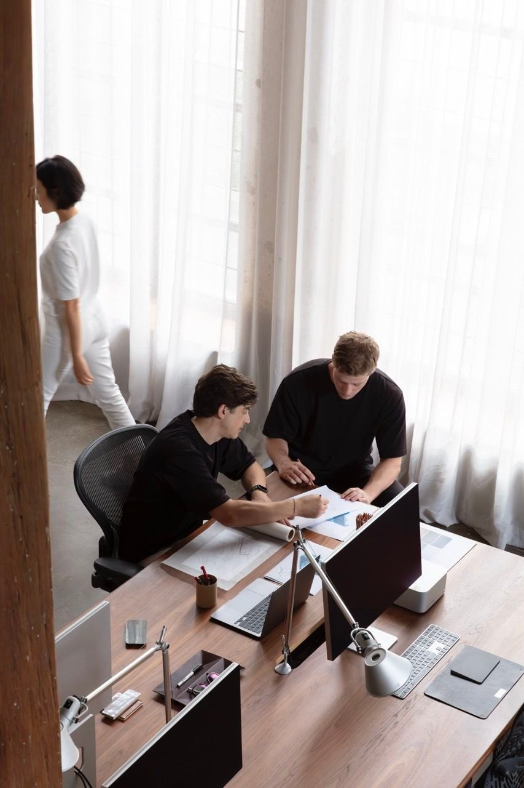

01Badania jakościowe · Testy użyteczności · [Branża]
Czasami to nie formularz jest problemem
Zespół chciał poprawić formularz. Badania pokazały, że ludzie odpadają wcześniej i z innego powodu. [Dwa zdania o tym, co odkryłaś i co z tego wynikło.]
- Pytanie
- Dlaczego ludzie nie kończą procesu?
- Metoda
- [X] wywiadów, [X] testów, analiza lejka
- Efekt
- [+X% ukończeń / decyzja biznesowa]